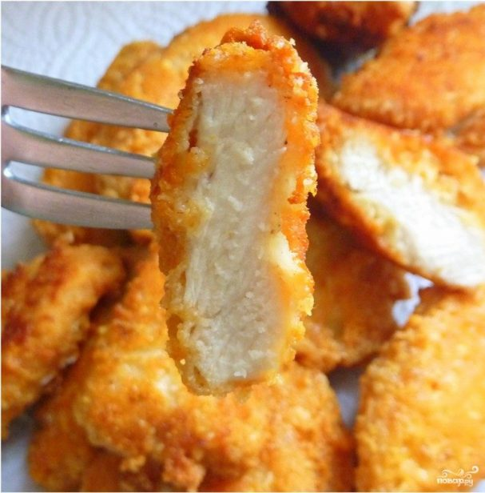
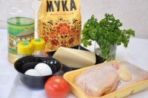
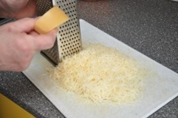
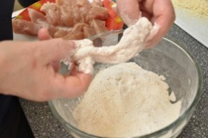
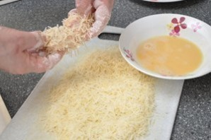

Минимум ингредиентов и усилий и вы сможете наслаждаться куриными наггетсами как в во всемирно известном ресторане быстрого питания. Для приготовления нам понадобится куриное филе.

Натираем сыр на мелкой терке в отдельную посуду. В другой емкости разбиваем куриные яйца, солим и приправляем их, после чего хорошенько разбалтываем вилкой.

Теперь остается дело за малым: нарезаем куриное филе полосками средней ширины и длины, обваливаем их в муке, а затем в яйце.

И в завершении - обмакиваем наггетсы в сырной крошке.
Отправляем филе жарится на растительном масле, на среднем огне. Обжариваем с двух сторон до золотистой корочки и промакиваем бумажным полотенцем.
Вот такими они получаются в готовом виде. Приготовьте дополнительно к наггетсам сырный, томатный или майонезный соус.